LOOKING BACK TO LOOK FORWARD: ILLUSTRATION STYLES OF THE PAST 30 YEARS
By Terry Hemphill
Illustration 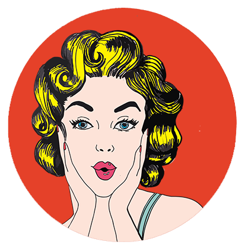 is one of the most important forms of visual communication : it informs and observes, delights and decorates, instructs and inspires. From the first drawings man made in a cave, illustration has played a fundamental role both in telling stories and in sharing information—and it is as relevant as ever in helping us understand our modern world. Today’s artists create an astonishing variety of illustrations across a spectrum of styles and genres, informed by a rich history and extraordinary innovations in recent decades. In this article, we’ll explore some of the art and social movements that have influenced illustration over the past 30 years.

It’s impossible to talk about contemporary illustration without citing the influence of Push Pin Studios, founded in 1954 by Cooper Union classmates Seymour Chwast, Milton Glaser, and Edward Sorel. The artists at Push Pin 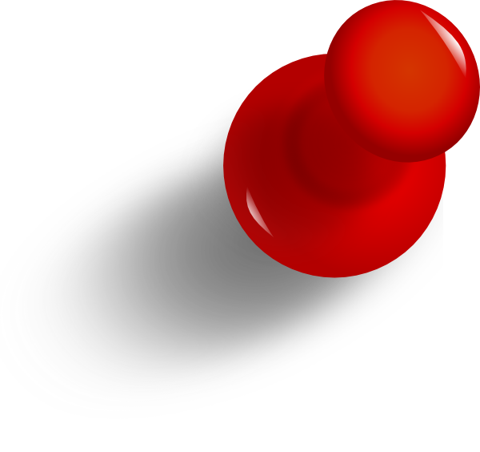led a revolution. “Push Pin threw everything out the window in terms of referencing style,” says Whitney Sherman, director of the MFA in illustration practice at MICA. Working conceptually, Push Pin artists freely plundered art and graphic history—from fine art to comic books 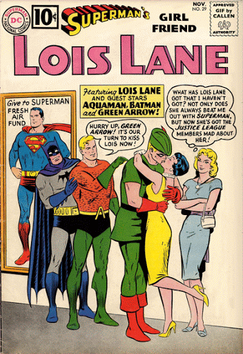—and reimagined and recombined these diverse forms, creating innovative, delightful, unexpected work.
By the late 1980s, illustrators 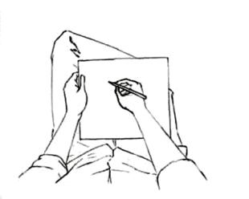 were free to combine, experiment with, and celebrate different historical styles and methods. They were just as inspired by historical art movements as they were by the punk 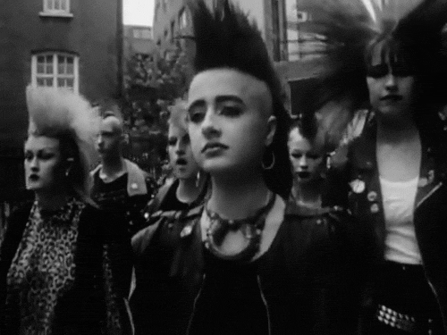 culture of the 1970s and the era’s New York City 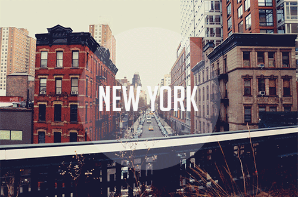 street art scene. Graphic design also helped define the look of the decade, with publications like The Face, art-directed by Neville Brody, leading the way with its radical use of typography and layout, which inspired many illustrators and designers.
An international design movement that started in England in the 1890s and thrived for the next two decades, Art Nouveau 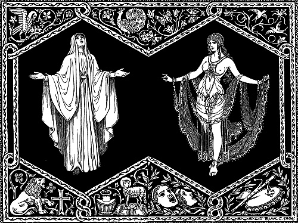 rebelled against the historical styles that had dominated design for most of the 19th century. Art Nouveau, just as its name implies, focused on innovation, and it led a revolution in modern design. Influenced by the British Arts and Crafts 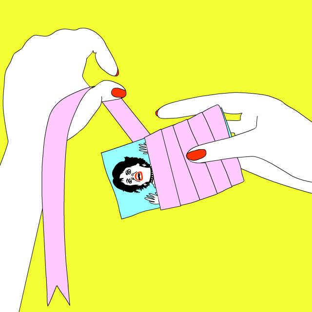 movement, Japanese 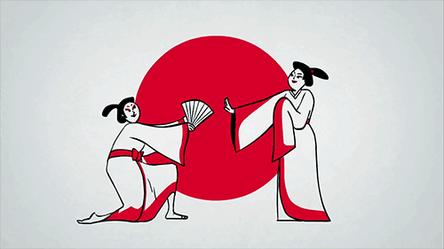 design and woodblock prints, Celtic patterns and illuminated manuscripts, and the paintings of Van Gogh and Cezanne, and borrowing from Rococo style, the movement quickly spread across Europe. Distinct styles emerged in each country, but a common graphic language connected them all: free-flowing organic forms, botanical shapes, fluid lines, unique display typography and lettering, and attention to fine workmanship.
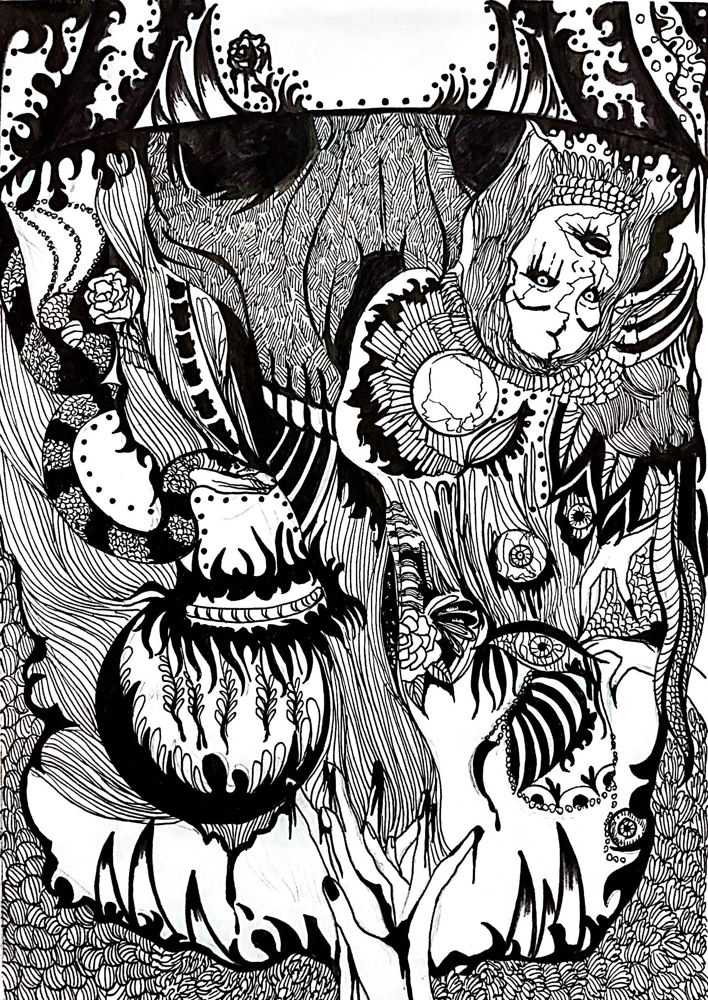Fast forward to 2017, and the idea of an art movement is laughable. Everything from Stone Age cave paintings to the latest Postmodernist art has been tossed into the spin cycle of popular culture and consumerism. The first picture was uploaded to the Internet in 1992. Today, more than 80 million images are uploaded to Instagram alone each day. “There’s no more ‘flavor of the month,’” says designer and illustrator Von Glitschka, referring to a term he and another illustrator coined for work that would be popular with creative directors for a while and then fade. “That doesn’t happen now. Social media 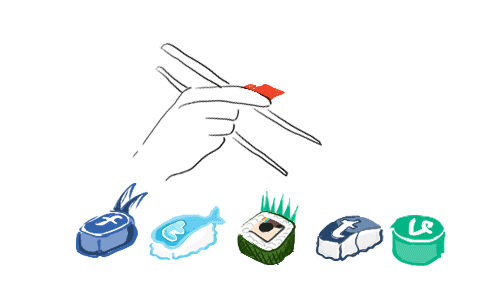 has changed that; the way an audience interacts with a ‘look’ takes place so quickly.”
But still, to paraphrase a line from The Big Lebowski, “The illustrator abides.” And we’re all the better for that. Most of the influential art movements 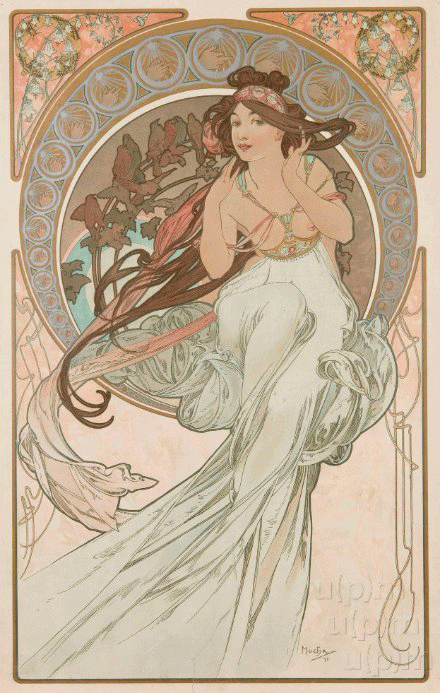 we’ll look at here developed as reactions to the status quo. So let’s find out what those rebels were up to.
 The Interpretation of Dreams, published in 1899 by Sigmund Freud, explored the relationship between dreams and reality and laid the foundation for the literary, intellectual, and artistic movement called Surrealism. The French writer, poet, and anti-Fascist André Breton, generally considered the founder of Surrealism, published the Surrealist Manifesto in 1924; it it, he defined surrealism as “pure psychic automatism.”
While the impact of Surrealist poets and writers was limited; the artists and painters associated with Surrealism had a significant impact on the visual arts and film. In their art, Surrealists liked to place objects not usually related to one another together, in ways that were playful and disturbing. Nature and people might be carefully presented in a true-to-life style but placed in a dreamlike landscape.
Surrealism’s impact on illustration, design, and visual communication has been distinct and wide-ranging. The movement pioneered new illustration techniques and showed how the world of dreams, symbols, and fantasy could be explored visually in ways that can provoke a universal response across many viewers.
The Interpretation of Dreams, published in 1899 by Sigmund Freud, explored the relationship between dreams and reality and laid the foundation for the literary, intellectual, and artistic movement called Surrealism. The French writer, poet, and anti-Fascist André Breton, generally considered the founder of Surrealism, published the Surrealist Manifesto in 1924; it it, he defined surrealism as “pure psychic automatism.”
While the impact of Surrealist poets and writers was limited; the artists and painters associated with Surrealism had a significant impact on the visual arts and film. In their art, Surrealists liked to place objects not usually related to one another together, in ways that were playful and disturbing. Nature and people might be carefully presented in a true-to-life style but placed in a dreamlike landscape.
Surrealism’s impact on illustration, design, and visual communication has been distinct and wide-ranging. The movement pioneered new illustration techniques and showed how the world of dreams, symbols, and fantasy could be explored visually in ways that can provoke a universal response across many viewers.